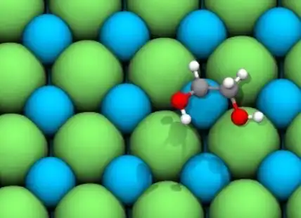
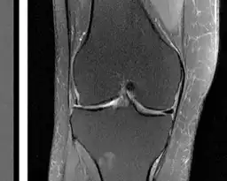

Datasets
Materials
-

-
Open Molecular Crystals 2025 (OMC25)
Over 27 million molecular crystal structures from DFT relaxations of 230,000+ randomly generated structures across 50,000 organic molecules. Released with machine-learned interatomic potentials.
-

-
Open DAC 2023 & 2025
Datasets for sorbent discovery in Direct Air Capture. ODAC23 provides 40M DFT calculations across 170K MOF relaxations; ODAC25 expands to 60M calculations across 15,000 MOFs with four adsorbate species. Released with machine-learned interatomic potentials.
-

-
Open Catalyst 2020 & 2022 (OC20, OC22)
Datasets for catalyst discovery to enable renewable energy storage. OC20 and OC22 together contain 1.3 million molecular relaxations from over 260 million DFT calculations. Released with baseline models and code.
MRI Acceleration
-

-
fastMRI Datasets
Large-scale dataset of raw MRI measurements for AI-accelerated reconstruction. Contains 1,500 fully sampled knee MRIs, 7,000 fully sampled brain MRIs, and DICOM images from 10,000 clinical knee exams.